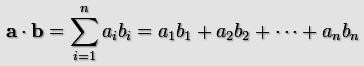
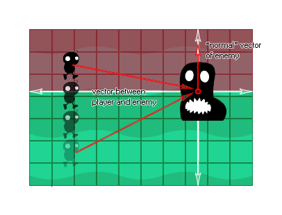

dot_product(x1, y1, x2, y2)
| 参数 | 描述 |
|---|---|
| x1 | 第一个向量的x坐标。 |
| y1 | 第一个向量的y坐标。 |
| x2 | 第二个向量的x坐标。 |
| y2 | 第二个向量的y坐标。 |
返回值: 实数
点积是一个表达两个向量间角度关系并用两个向量相乘①然后相加的结果。“点积”这个名字源自于经常被用于指明这种运算的中心圆点符号“·”（又称为“标量积”（数量积），强调了其结果本质是一个标量而不是向量）。
实质上的数学公式可以被写成像这样：

所以在2维中向量a(x1,y1)和b(x2,y2)的点积是x1y1+x2y2，意味着在GameMaker: Studio中点积被计算为：
a · b = (x1*x2)+(y1*y2);
关于点积最令人好奇的事情就是它与由输入的向量形成的角度的关系，其被表达为：
a · b = |a| × |b| × cos<a,b>
That is to say, the dot product of two vectors will be equal to
the cosine of the angle between those vectors, multiplied by the
lengths of each of them. Here is an image to illustrate:
There are a few things that we can now state from any two vectors in relation to the result of their dot product:
So what does this mean for those of us that make games? Well,
this mathematical relationship can be used in quite a few
circumstances, but the best way to see it is to build an actual
scenario and see for yourself what is going on. One of the simplest
ways to do this is to generate a simple "line of sight" check for
an enemy in, say, a platform game so that the enemy will "see" the
player if they are within 90� of either side of their vector
normal.

Basically, we have to get the vector normal from the enemy (ie: comprised of a direction and sight distance) and then we need to get the vector of the player to the enemy. We will then get the dot_product of these vectors, and if the result is positive the player has been seen, and if it is negative he hasn't. The actual code to get this working is supplied in the example below.
var x1, y1, x2, y2;
x1 = lengthdir_x(1, image_angle);
y1 = lengthdir_y(1, image_angle);
x2 = o_Player.x - x;
y2 = o_Player.y - y;
if dot_product(x1, y1, x2, y2) > 0 seen=true else
seen=false;
The above code creates a vector using the instances image angle, and then gets the vector of the player object "o_Player" to itself. Finally it calculates the dot product of these two vectors and if it is greater than 0 it sets the variable "seen" to true, and if it is equal to or less than 0 it sets it to "false".
| Converted from CHM to HTML with chm2web Pro 2.85 (unicode) |